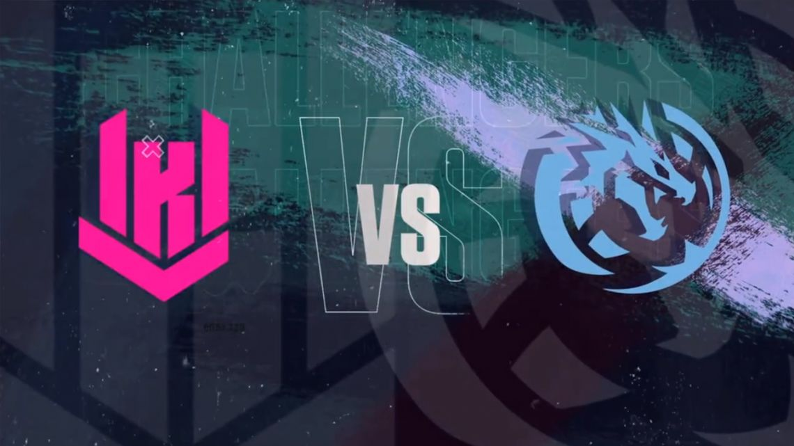
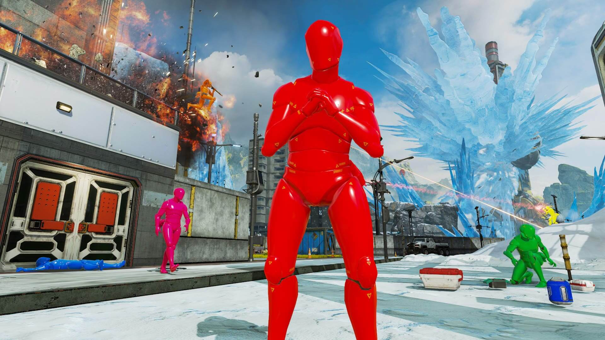

KRÜ Y LEVIATÁN JUEGAN LA FINAL DEL CHALLENGERS PLAYOFFS POR EL VIAJE AL MASTERS
Desde las 17 de Argentina, los dos mejores equipos de Latinoamérica Sur se medirán en Ciudad de México.
El campeón se asegurará su pasaje directo para el Masters de Islandia, mientras que el perdedor tendrá una chance más en el repechaje.
Continúa leyendo AQUÍ

NOTAS DEL PARCHE DE RESISTENCIA DE APEX LEGENDS
Celebra el tercer aniversario de Apex Legends™ con Resistencia. Esta nueva temporada presenta el modo Control para 9c9, disponible por tiempo limitado, una leyenda muy punk llamada Maggie la Fiera,
la primera actualización del mapa Olympus, un nuevo pase de batalla frenético, una nueva temporada de clasificatorias y más
SE FILTRA QUE REGRESARA EL EVENTO DE APRIL'S FOOLS EN APEX LEGENDS
La filtración vino de twitter donde le preguntaron al desarrollador de Apex Legends Josh Medina si este año tenian algo pensado para la fecha
a lo que Medina respondió que estaba definido hace ya dos semana. Los detalles del evento no fueron revelados, pero estamos a la vuelta de la
esquina para averiguarlo.

VUELVE EL MODO CONTROL CON EL EVENTO DE COLECCION GUERREROS
Como siempre que llega un nuevo evento a Apex Legends, los fanáticos están ávidos de novedades para saber qué traerá la nueva actualización. En esta oportunidad,
EA y Respawn confirmaron que con el evento de colección Guerrerors volverá a Apex Legends el Modo Control desde el 29 de marzo y por tiempo limitado. Lee todo acerca del nuevo
evento AQUÍ